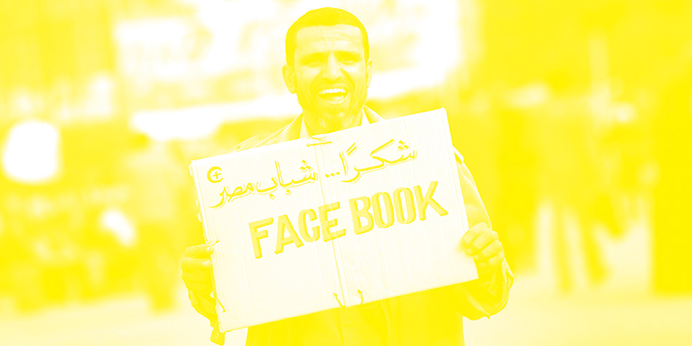
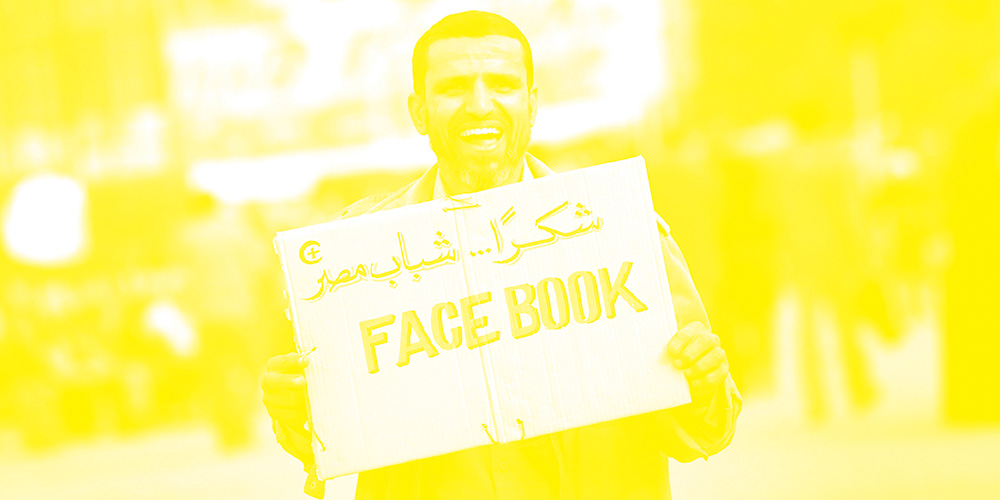

be free
What is the price of information? I typed these words in a text editor, designed the pages in an Adobe product. I uploaded a PDF to a website for a company in Glasgow, gave them my credit card number, and a few days later a stack of these arrived at my door. And now I’m giving them to you for free.
Words are tools. Text is a medium. When Marshall McLuhan wrote that the medium is the message, he explained how the way we communicate—the mediums we use—have just as much influence over the message it’s trying to communicate. The mediums used for information distribution throughout history have shaped cultures and changed the way we communicate. Just as a medium can make distribution wider, cheaper, and more accessible, it can also obstruct, withhold, and subvert. What is happening here? Am I clarifying or obstructing? What is our relationship? Do you trust me? This is a publication that uncovers these extremes.
Forty miles from San Francisco, north of the Golden Gate Bridge, lies Marin County. It’s 1984 and Stewart Brand, then known as the founder and editor of The Whole Earth Catalog—a publication Steve Jobs would later describe as the Bible of his generation, a Google in paperback form—was organizing the first Hackers Conference. At the event, Brand told Steve Wozniak, Apple co-founder and one of the original 150 attendees: “information wants to be free, because the cost of getting it out is getting lower and lower all the time.” The history of information is also the history of access.
In the 1450s, former goldsmith Johannes Gutenberg refined a system of moveable type, improving upon the laborious process of copying text my monastic scribes. Gutenberg’s invention was built upon a series of movable components consisting of letters and punctuation which allowed printers to easily, and quickly, reproduce text. The Gutenberg Bible, the first document produced with his invention opened up the age of printed book. The 36-line Bible was printed in an edition of 180, making it the first mass-produced piece of text. The Biblical texts were no longer relegated to churches and priests—anyone could now look upon the text.
In Victor Hugo’s 19th century novel Notre Dame de Paris, the main antagonist, an archdeacon, posited how architecture had become proportionate to human power—the bigger the space, the more power one had. The archdeacon worried that Gutenberg’s technology would kill architecture—the printed word would become the primary vessel through which information and power would flow; “This will kill that. The book will kill the edifice.” Information became a bit more accessible.
By the late 1400s a Venetian publisher named Aldous Manutius further popularized the publishing and distribution of books. Among his inventions, Manutius commissioned the first italicized type, established the modern use of the semi-colon and comma, and developed typefaces that later inspired Palatino, Garamond, and Bembo. But perhaps most importantly, Manutius invented the inexpensive pocket-sized book. Where Gutenberg’s Bible was printed in an addition of 180, Manutius’s were printed in the thousands. Where Gutenberg’s Bible were large, heavy, and stayed in libraries, Manutius’s work was small, lightweight, and went with you. In less than half a century, information went from something reserved and owned by the church and government to something available to everyone, always in their pocket.
As with any innovation, progressive improvements continue over time. Over the next few hundred years, text production got quicker, cheaper, and more efficient. In 1605, a man named Johann Carolus started publishing Relation aller Fürnemmen und gedenckwürdigen Historien in Germany which translates to Account of all distinguished and commemorable news. Charolus’s publication used the same formats made familiar in book publishing: it was printed in quarto size (produced from full ‘blank sheets’, each printed with eight pages of text, four to a side, then folded twice to produce four leaves or eight pages. Each printed page now presented as one-fourth size of the full blank sheet.), with a single-wide column of text. It stood out in that it was printed weekly making it the first mass produced, serial publication.
While Relation aller Fürnemmen und gedenckwürdigen Historien is largely considered to be the first newspaper, some argue that the first modern newspaper was produced a few years later in 1618 in Amsterdam, printed by Joris Veseler and published and edited by Caspar van Hilten. Courante uyt Italien, Duytslandt, &c. was a weekly publication and is recognized as the first broadsheet publication (issued in folio-size). It was printed on a full sheet folded once to form four pages and cut at the fold. The first issues were only printed on one side until 1620 when it also saw the addition of each issue’s date and serial number, now essential to modern newspapers. The main text was set in two columns, separated by a gutter with a line running through it. The text was set in a Dutch blockletter fully justified and each paragraph was indented the size of the line-height. The newspaper brought a new speed to information distribution. Its content was now current and its readers interested in time-sensitive information like political news, financial information, and current events.
In 1644, the English poet John Milton, best known for his epic poem Paradise Lost published a short pamphlet subtitled A speech of Mr. John Milton for the Liberty of Unlicenc’d Printing at the height of the English Civil War that argued against government censorship. Milton was arguing against the Licensing Order of 1643 that required authors to have a license approved by Parliament before publishing. Milton has suffered censorship in his previous writing and attempted to speak out against it arguing that a rejected text should be “examined, refuted, and condemned” rather than prohibited. Ideas should be expressed, he argued, because there are still lessons to be learned regardless of corruption or “infection”. Milton’s pamphlet did little to change the law but is considered a seminal defense of freedom of the press and forms the basis for modern arguments of the right.
Across the Atlantic Ocean, in Boston, a man named Benjamin Harris, a book publisher from England who printed the first American textbook, published Publick Occurrences Both Forreign and Domestick in 1690, making it the first newspaper of the American colonies. The paper was intended to be published monthly but was shut down before a second edition was printed by the British Colonial Authorities.
Beginning in 1704, The Boston News-Letter was the first continuously published newspaper of British North America. The publication was subsidized by the British government and the governor had to approve every piece of copy. The first American newspaper was called The New-England Courant and began publication in August 1721 by James Franklin. Franklin’s younger brother Benjamin, worked as a typesetter for the paper and eventually published dozens of articles under the pseudonym Silence Dogood. James was imprisoned for a month after he declined to reveal the author’s identity. Benjamin Franklin saw the newspaper—and more broadly, the printing press—as a tool to guide early American life.
Until the late 1600’s England has a complex licensing system that prevented publications without a government-granted license. In 1694, the English House of Commons voted to not renew the Licensing Act making it the first country to allow freedom of the presses. Until then, the government had a monopoly on printing presses and unable to enforce any control, small towns began setting up their own presses which produced cheaper books and opened up an international market for bookselling.
The young United States followed with the first amendment in the Constitution granting the right to freedom of the press. The Free Press Clause protects the right of “individuals to express themselves through publication and dissemination of information, ideas and opinions without interference, constraint or prosecution by the government.” By the late 1800s, Chief Justice Hughes defined the amendment as a “fundamental personal right” that is not limited to newspapers or periodicals. As of 2015, the United States ranks 30th in Freedom House’s Press Freedom Report—an independent watchdog organization that awards and criticizes countries on press limits in the name of national security. Norway ranks number one. North Korea sits at the end.
There is only freedom of the press for those who own one
 

In 1960, in a column for The New Yorker, journalist A.J. Liebling wrote what would become his most famous line: “freedom of the press is guaranteed only to those who own one.” Liebling argued that those who could afford a printing press had ultimate control over information distribution and they had the right to refuse any advertisement or editorial they disagreed with. He worried that the power of distribution was limited to the few wealthy corporations that owned the newspapers.
In France in 1990, an English scientist named Tim Berners Lee wrote the first protocols for the World Wide Web and the first browser. The World Wide Web is an information space where documents and resources live at unique URLs and referenced with hyperlinks built upon the Internet. Berners Lee’s invention felt like the culmination of the information age—the full transition from the industrial revolution to an economy built around information. The world wide web opened up the floodgates of information distribution. Perhaps more so than any prior invention, the world wide web lowered production costs, sped up delivery times, and increased distribution and readership.
The internet democratized publishing. Anyone could set up a webpage. Blogs, a shorthand term for “web-logs”, gained popularity in the early 2000s, allowing people to post thoughts, articles, and journals to their own corners of the internet. Forums and chatrooms sprung up on a variety of topics. Average people gained readers by writing on specific topics. New media companies like the Huffington Post, a hybrid blog and newspaper, were started as solely online publications. If Liebling, who died in 1963, had lived to see the internet, he’d have lived to see a world where everyone could own their own printing press of sorts. The information age was upon us—the question was no longer distribution, now it was about discovery.
Larry Page was a Ph.D. student at Stanford University in 1996. In considering a dissertation topic, Page was considering exploring the mathematical structure of the world wide web. He wanted to understand the linking structures and focused on which web pages link to others and argued the concentration of links to a given page helped determine that page’s importance.
Page was soon joined by Sergey Brin, a National Science Foundation Graduate Fellowship winner, who was working on the Standard Digital Library Project, focused on developing a single, universal digital library. Once Page’s web crawler began moving through the web, they set out to make a search engine based on the linking structure they were discovering.
The duo formally incorporated their company, Google, on September 4, 1998. By the end on 1998, Google had indexed close to 60 million pages and produced better results than the existing search engines. Google’s mission statement was to “organize the world’s information.”
In 2000, Google began selling advertisements associated with search keywords—text-based ads were uncluttered and showed up on the right hand side of the results page. Companies could buy ad placements based on searches and would show up when site visitors searched for those words. Where many internet companies failed during the dot-com burst in the early 2000s, Google continued to grow. Their initial public offering took place on August 19, 2004 with shares going for $85. Many of Google’s employees became millionaires as their market capitalization rose to $23 billion.
A few months earlier, another internet company was born on the other side of the country. Mark Zuckerberg was a sophomore computer science major at Harvard University when he started writing code for a site he thought could connect people around the university. On February 4, he launched thefacebook.com. “Everyone’s been talking a lot about a universal face book within Harvard,” Zuckerberg told the Harvard Crimson, “I think it’s kind of silly that it would take the University a couple of years to get around to it. I can do it better than they can, and I can do it in a week.” After the first month, half of Harvard’s student population had registered for TheFacebook and Zuckerberg was joined by Eduardo Saverin, Dustin Moskovitz, Andrew McCollum, and Chris Hughes. By March, the social network had expanded to Stanford, Columbia, and Yale. Just a few weeks before Google would go public, Zuckerberg’s company incorporated on July 29, 2004 under the name TheFacebook, Inc.
Shortly after, Zuckerberg moved his company to Palo Alto, California and dropped the “the” in the name, purchasing facebook.com for $200,000 in 2005. They quickly expanded to the United Kingdom and by the end of 2006, opened Facebook up to everyone over the age of thirteen who had a valid email address. By 2007, 100,000 businesses were on Facebook, allowing companies to directly interact with their customers. In September 2012, Facebook became the first social network in history to have one billion users.
In 2003, Google bought Blogger, a popular free blogging tool created by Ev Williams. At no cost, anyone could publish their own blog, hosted on Google’s servers. Williams would go on to found Twitter a few years later. Journalists flocked to blogs and Twitter, which gave them direct access to their readers and an easy ability to publish and distribute content at no cost. Facebook allows users to connect with their friends and post topical information like blog posts, status updates, photos, movies, links, humorous memes, and locations. Now one could get their latest news through their friends. Distribution became social.
In 2010, protests broke out in Tunisia. Demonstrations, riots, and civil war lead to the Tunisian Revolution and spread throughout the Arab League. The revolution, which became known as the Arab Spring, led to Tunisian rulers being forced out of power. The protests are known for their heavy social media use, both with Facebook and Twitter, to organize, communicate, and raise awareness in the face of the countries’s attempts at censorship. Social media became a tool for the oppressed. Information was available to all and at no cost.
Distribution and access was completely universal. For the first time in history, freedom of the press was not reserved to those who could afford it.
wants to be free. Information wants to be expensive. That tension will not go away.
wants to be free. Information wants to be expensive. That tension will not go away.
Information wants to be free. Traditional media typically charges for access—buying physical newspapers, magazines, and books or putting their content behind paywalls—but many online companies allow free access of all their content and make their money through sponsored content. By using services from companies like Facebook and Google, these companies can collect the data you input—things like age, gender, emails, locations—and serve you relevant ads. Where print media companies have little data about its readership, online companies have the ability to know everything.
Google has increasingly used ad space in search results to promote its own products over those of competitors. Facebook uses a complex algorithm based on likes, popularity, comments, and artificial intelligence to order its News Feed to ensure users are seeing new and relevant information each time they log into the service, while also dropping in ads based on your personal data and location.
In the summer of 2014, Facebook revealed a study conducted by a group of the company’s data scientists and psychologists that manipulated users’ News Feeds to test how they responded to overtly negative or positives messages. In an article titled “Experimental Evidence of Massive-Scale Emotional Contagion Through Social Networks”, Facebook details how if a user sees more positive posts in their Feed, they are more liked to publish and share positive content but if one sees more negative content, when they post, they’re posts will lean negative.
This study illuminated, among other things, that despite the internet’s democratization, the information we encounter is still being filtered. Information wants to be free, so we’ve become the product companies can sell to keep it that way. Most technology companies are built on user data allowing them to serve up the right information at the right time. Facebook has frequently boasted that they drive more traffic to news sites than any other website on the world wide web.
And now, the three biggest technology companies—Apple, Google, and Facebook—have all launched their own news platforms. These companies, no longer content to direct traffic to others, now wants to host this media themselves. Apple created the News app, a human and algorithmically curated publication of the latest news available for free on any of their iOS devices. Facebook launched Instant Articles, a native publishing platform they are encouraging major publications to publish through. Where Liebling was concerned that freedom of the press was limited to those with money—arguing companies had the right to refuse advertisements they disagreed with—we’re once again seeing a few massive organizations controlling the distribution of large amounts of information. Can Apple bury a damaging story about itself by building an algorithm to keep those stories out of its app? Could Facebook hide stories in its News Feed it doesn’t want users to see?
In 2013, the company launched internet.org, an initiative to provide internet access to developing countries. In announcing the project, Zuckerberg wrote a piece called “Connectivity is a Human Right” where he laid out the importance of access, not just to the developed world, but also for those with lower resources. Ironically, you can only read Zuckerberg’s essay if you are a Facebook user. Internet.org’s primary product is a low-powered Facebook app that lets people in developed countries access Facebook for free (with Facebook subsidizing the data access) but if they click any links, they are charged standard data rates. The company seems to believe that information can be free, as long as its on Facebook.
Google lures advertisers with its users data; Facebook gets publications to host content on their site by sharing information about the readers. Perhaps we don’t pay for this content with our money, but rather with our data. Information gets traded for information. Information about us is currency for the free information we turned to these sites for. Information wants to be free.
Technology companies have so much data, that when Edward Snowden leaked thousands of documents of the NSA’s global surveillance programs, it was revealed the United States government requested the major technology companies—Apple, Google, Facebook, Yahoo, and Microsoft—build backdoors into their databases for the government. The program, codenamed PRISM, revealed in June 2013, reported the government has access to companies like Dropbox, Skype, and AOL, for national security purposes.
After Kanye West announced at the MTV Music Awards that he’d run for president in 2020, Vanity Fair interviewed the rapper and fashion designer about his potential platform. Even Mr. West sees access and power as central issues:
The world is stingy with information. Information is the most important thing we have. Anytime I’ve ever had someone who intentionally held information from me in order to either control or manipulate the situation, be in charge of it in a certain way, that is the greatest travesty. It’s like being a fucking thief, you’re stealing information.
Freedom of the press is limited to those who can afford a printing press. The history of information is also the history of access and obstruction. Throughout history, the distribution of information has been tied to money, politics, and power. Advancements in technology, from Gutenberg to Google, have cut down costs of production, reduced times of distribution, and made it easier for anyone to publish, but each step of the way complicates our relationship to its content. This is not a new trend, but one that’s forever inextricably tied to the dissemination of information.
“Information wants to be free”, Stewart Brand told Steve Wozniak in 1984 at the Hacker Conference in Marin Country, “but it also wants to be expensive.” He went on, “The right information in the right place just changes your life. You have these two fighting against each other.”
Information wants to be free. Information also wants to be expensive. That tension will not go away.
Information
wants to be expensive

About this project
The Information Zine is is an eight-page, two color zine printed on newsprint about the...This piece, using the form of the zine (a traditional sub-cultural form of distribution), chronicles the complicated history. The form of the zine itself, then, becomes a method of distribution while constantly balancing obstruction and access.
Photos of the zine can be seen on my website